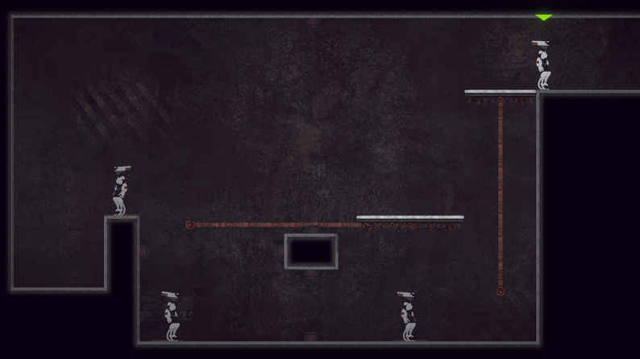
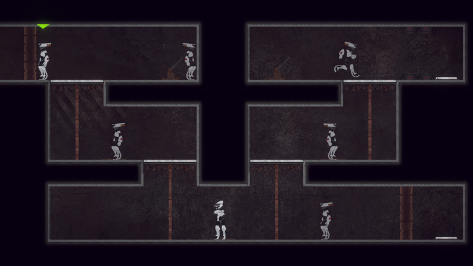
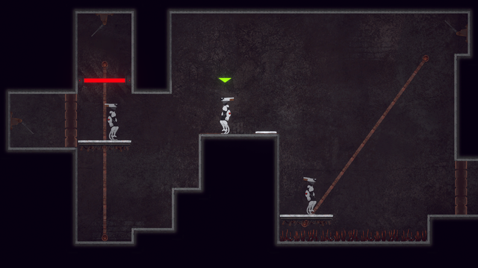
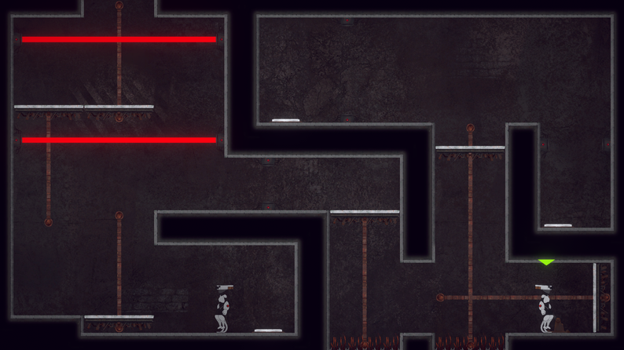
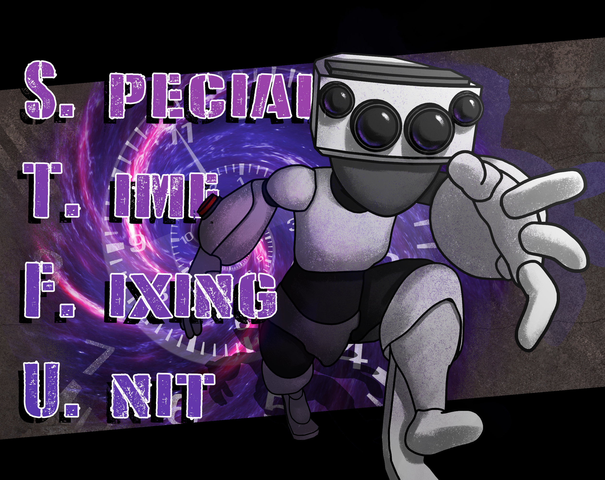

Special Time Fixing Unit
Introduction
The Special Time Fixing Unit is a puzzle-platformer developed for the Beginner's Jam Summer 2024. The game challenges players to navigate complex environments by manipulating time, collaborating with past versions of themselves to prevent disastrous time paradoxes. As the Level Designer, I focused on crafting intricate, engaging levels that leverage time mechanics to create challenging and rewarding gameplay experiences.

Problem Statement
The core challenge was designing puzzles that fully utilized the time travel mechanic without overwhelming players. Balancing the game's difficulty while ensuring the mechanics felt intuitive and rewarding required careful level design and iterative testing.
Design & Development
In collaboration with a talented team, I designed levels that demanded strategic thinking and creative problem-solving. Unity's powerful tools were utilized to implement complex time-based mechanics, while visual storytelling and atmospheric design enhanced player immersion. Playtesting sessions were critical in refining puzzle flow and ensuring a balance between challenge and accessibility.

Key Features
Time Manipulation Mechanics
Innovative gameplay where players interact with past versions of themselves to solve puzzles and avoid paradoxes.
Challenging Level Design
Carefully crafted levels designed to challenge players' logic and creativity while utilizing time mechanics.
Atmospheric Visuals and Sound
Immersive environments and sound design enhance the experience of navigating a world where time is fragile.
Final Result
The Special Time Fixing Unit successfully delivers a compelling blend of platforming and puzzle-solving through its unique time mechanics. The final product offers players a rewarding and immersive experience, pushing the boundaries of traditional puzzle-platformers. The project was well-received in the game jam and highlighted our team's creativity and design strengths.

Play the Game
Ready to experience time-bending puzzles? Play Special Time Fixing Unit now on Itch.io!
Project Image Gallery

